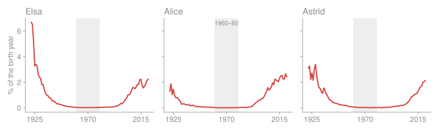
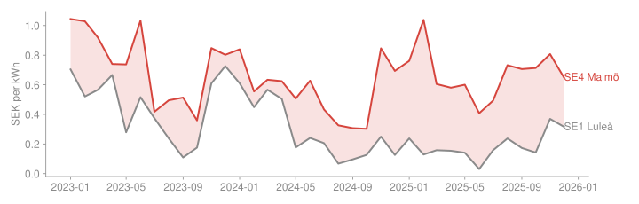
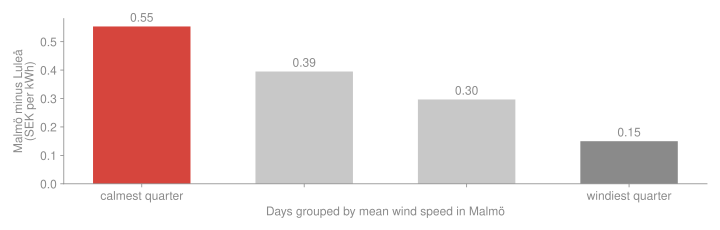
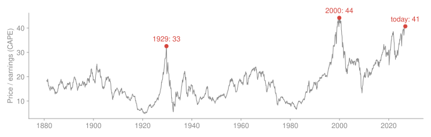
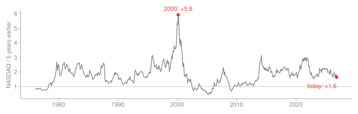
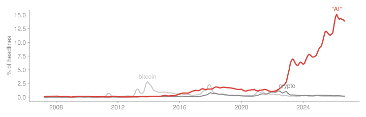

MT4008 Statistical Data Processing · Introduction
Thursday 5 November 2026
5 minutes
Are baby names a fashion?
One table from Statistics Sweden.
10 minutes
Why does electricity cost more in Malmö than in Luleå?
Prices from an API, joined with weather.
10 minutes
Is AI a bubble?
Three sources, and a question that first has to be made measurable.
All three are real analyses of real data, and you can rerun every one of them.
Every project in this course goes round this cycle, from HW1 to your group project.
After the cycle in Wickham, Çetinkaya-Rundel & Grolemund, R for Data Science (2e).
Small project · one source

Share of each birth year with the name, among the 200 most common names in Sweden. Data: SCB.
One source, one straight line. The red step is where the work was. The report on GitHub
Medium project · two sources joined
Mean spot price 2023–2025. Data: Nord Pool via elprisetjustnu.se.

The shaded area is the gap. Is it the wind? Wind power in the south should push southern prices down.

On calm days Malmö pays 0.40 kr/kWh more than on windy days (95% interval 0.34 to 0.47). But wind and temperature explain only 18% of the day-to-day gap.
Three files, joined into one table. The report on GitHub
Ambitious project · three sources, and a question that needs work first

CAPE of the S&P composite. Data: Robert Shiller.

The NASDAQ index divided by its value five years earlier. Data: FRED.
Today ×1.6: higher than only 40% of months. In 2000: ×5.9. This sign is not there.

Share of Hacker News story titles with each word, 3-month average. Data: HN Search API.
Two of three signs are there. Whether a crash follows is not in the data.
The red step: the question itself. The report on GitHub
Smalla clear question, one source, honest about its limits
Mediumsources combined, an analysis beyond description, uncertainty
Ambitiousa question made measurable, checked, convincing
Data science is the whole cycle: from a question, through messy real data, to an answer someone else can check. Statistics tells you how sure you can be; code makes it repeatable.
You choose Python or R. Everyone uses Quarto, Git and GitHub, VS Code.
More: About the course
Each assignment is handed in on the Monday after its week. Last chance for any assignment: Fri 15 Jan, 23:59.
More: How a week works
| Assignment | Hand in | Peer review | Final version |
|---|---|---|---|
| HW1 Your first reproducible report | Mon 9 Nov, 23:59 | Thu 12 Nov, 23:59 | Fri 13 Nov, 23:59 |
| HW2 Tables and plots | Mon 16 Nov, 23:59 | Thu 19 Nov, 23:59 | Fri 20 Nov, 23:59 |
| HW3 Exploring and visualising data | Mon 23 Nov, 23:59 | Thu 26 Nov, 23:59 | Fri 27 Nov, 23:59 |
| HW4 SQL and regex | Mon 30 Nov, 23:59 | Thu 3 Dec, 23:59 | Fri 4 Dec, 23:59 |
| HW5 Data from the web | Mon 7 Dec, 23:59 | Thu 10 Dec, 23:59 | Fri 11 Dec, 23:59 |
More: Assignments
Each assignment is scored 0–100, and 65 passes. A late hand-in costs 30 points:
More: Assignments
<username>-assignments. You’ll get an invite.More: How we work
The three projects you just saw are reference points. Bigger means more thinking, not more pages.
More: Project
More: Exam
After the break: reproducible analysis, and the statistics you need for HW1.